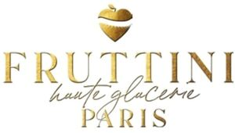

Trade Mark Journal No.2025/033 15 August 2025
WO0000001854829 (29,30,43)
Office of origin: France
Date of International Registration:26 February 2025
Date of designation in the UK:
26 February 2025

Registration of this mark shall give no right to the exclusive use of 'PARIS'.
International priority date claimed: 27 August 2024
(France)
(5078147)
- Class 29
- Milkshakes and beverages based on milk; frosted fruits; glazed fruits.
- Class 30
- Cakes; edible ice, fruit ice, food ice specialties, sherbet and desserts and frozen confectionery, products mainly consisting of ice cream preparations, in particular ice creams based on cream, milk or water, or ice cream substitutes, premium Italian-style ice-cream specialties, Italian-style ice creams in stick form; soft Italian-style ice creams; sherbets, dessert ices, ice cream cakes and other preparations containing ice cream for making desserts, frosted and glazed fruit preparations for making desserts.
- Class 43
- Catering services (food) including preparation and serving cakes, edible ice, frosted fruits, glazed fruits, fruit ice, edible ice specialties, sorbet and desserts and iced confectionery, products mainly consisting of ice cream preparations, in particular ice creams based on cream, milk or water, or ice cream substitutes, premium Italian-style ice cream specialties, Italian-style ice-cream sticks, soft Italian-style ice creams, sorbets, dessert ice creams, ice cream cakes and other preparations containing ice cream, frosted and glazed fruit preparations, milkshakes and milk-based beverages; tea room.
FRUTTINI GLOBAL SPC LLC
Representative: Madame MOYA FERNANDEZ Natalia, Grant Thornton Société d’Avocats,, 29 Rue du Pont, F-92200 Neuilly-sur-Seine, FRANCE